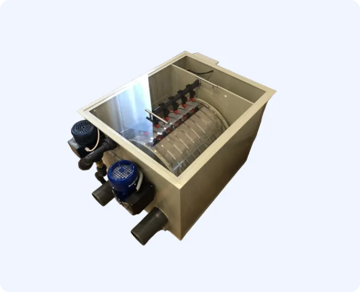

Фильтры для пруда
Фильтр барабанный ТМ AVA серии PF-80, для пруда до 150000л
Цена и наличие
- 1 шт.10 730,01 BYN / шт.В наличии
Данные на 23.11.2026.
Характеристики
- Бренд
- AVA
- Тип фильтра
- барабанный
- Макс. объем для пруда с рыбой
- до 110000 л
- Макс. объем для пруда без рыбы
- до 150000 л
- Макс. объем для УЗВ
- до 80000 л
- Макс. объем УЗВ
- до 80000 л
- Производительность пруд с рыбой
- до 110000 л
- Производительность пруд
- до 150000 л
- Потребляемая мощность с промывочным насосом
- 700 Вт
- Вход/выход
- 3х110/2х110
- Серия
- PF
- Напряжение
- 220-240V 50Hz
Описание
Барабанные фильтры из полипропилена ТМ AVA серии PF-80.
БАРАБАННЫЕ ФИЛЬТРЫ ИЗ ПОЛИПРОПИЛЕНА ТМ AVA СЕРИИ PF-80 Усовершенствована система сброса в канализацию собранного мусора, которая предотвратит закупорки сливного лотка крупным мусором. Конструкция фильтра разработана таким образом, что предотвратит попадание нежелательного запаха в помещение, где он установлен. В комплекте идет промывочный насос, подключенный к отсеку с очищенной водой. Барабан может работать в ручном и автоматическом режиме. Замена сетки производится без снятия самого барабана и только в необходимой секции, что экономит время и материалы. Прочная прозрачная крышка фильтра облегчит работу с ним. У каждого фильтра есть индивидуальный заводской номер, с помощью которого вы сможете получить информацию о дате изготовления, комплектации, географии продажи, а также уберечь себя от покупки некачественной копии. В барабанном фильтре используются легкодоступные комплектующие, которые можно заменить на аналоги. Возможность работы как от сети 220 В, так и 380 В.